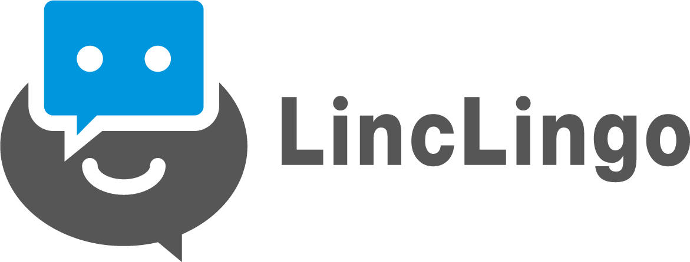
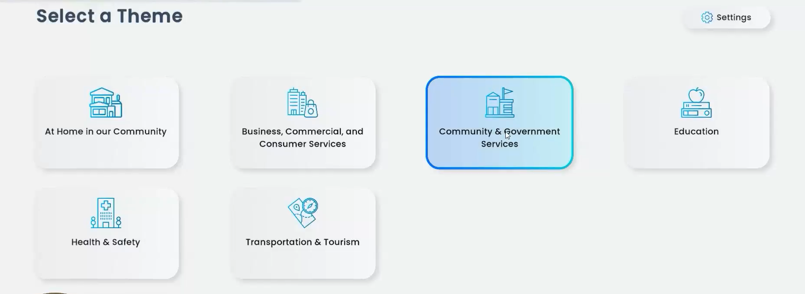
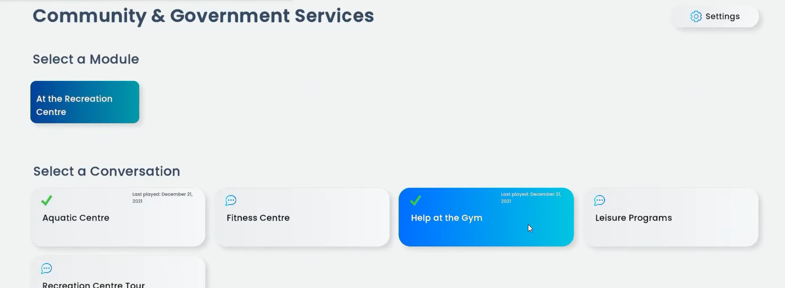
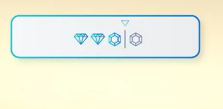
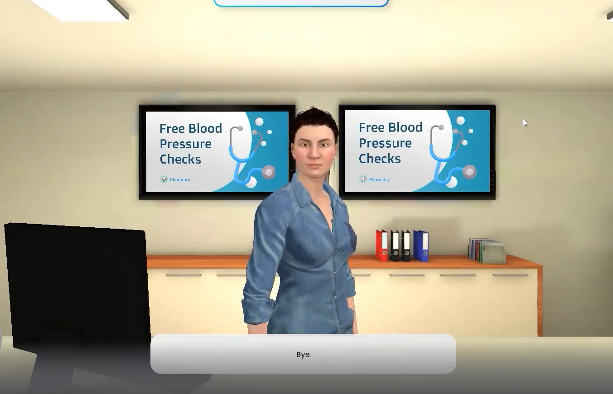
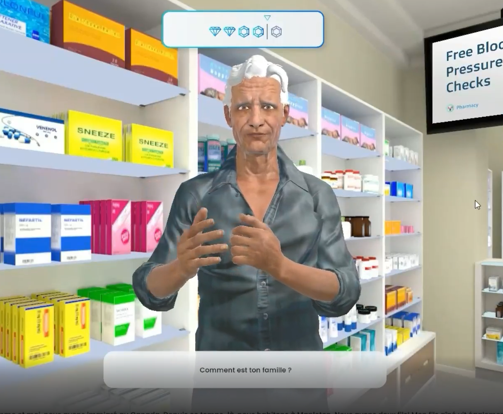

LincLingo

Practice public English speaking skills in different scenarios from talking to an old friend at the coffee shop, getting your medicine at the pharmacy or resolving bank issues. With different language levels, you can practice English at the level you feel comfortable and level up as you goMeta Quest, WebGLC#, JavascriptUnityNov 2020 - presentOne of the colleges in BC wanted to train their students in listening and speaking skills. They also wanted to see a transcript so they could listen to how the students responded. Our idea was to create an application that lets students practice those skills in daily situations.My task includes: Finding a device management to put the VR version of this app, setup the project in Unity/Gitlab for a WebGL and VR version, Setup a Login scene, Setup a Lobby Scene, and help with setting up the "scenarios" where the user can interact with AI characters to practice their listening and speaking skillsMy first task was to find a device management so I can share our VR app with the client. The client will share this app to 200 students who may have never used VR before. Therefore, the device management requires a simple UI where when the headset is turned on, it will display only our apps. I also had to make sure the device management is SOC2 Compliant. After searching, comparing pros/cons/cost and testing different device management. I felt ArborXR was the best one for our use case. I brought this up with management and we came to an agreement. We have been using ArborXR for over half a year, and so far it has been a great choice. Shoutout to ArborXR!Setting up the project is explained in WBLC. The login was originally implemented in BeConfident. The lobby was also originally implemented in BeConfident. However, what was different is the layout and how it is presented. The lobby displays the categories page first (E.g government category, pharmacy category). On the second page it will display the scenarios. The scenarios will also display when the user last played this scenario. To make things more challenging, this app is localized and the user can change the language in the lobby. This means I'll have to change all the text on runtime. My favorite part was figuring out how to add pagination which is discussed in BeConfident.

I teamed up with the backend team to figure out what information I would need to retrieve while in the lobby so I can sort the categories and scenarios. I worked with the framework team to figure out how localization would work on runtime. Another part was abstracting out the lobby so I can apply it to VR and WebGL. Since the UIs used were different, I had to apply generics so I don't have to repeat code for VR and WebGL. I made sure the buttons are clickable, have hover effects, if the button is already selected then the user cannot click on it.

In the scenarios, I helped with sending data such as last played and number of objectives achieved. I also helped with implementing when the user has completed an objective. When the objective is completed, a gem will appear

We ended up providing our beta testing to the college. Students could choose any scenarios they like from the lobby and would enter a different environment and character each time. For example, below is at the gym

And another at the pharmacy

This app also used addressables so that our build size would not be too big. We used split application binary for our VR builds to help reduce the size as well